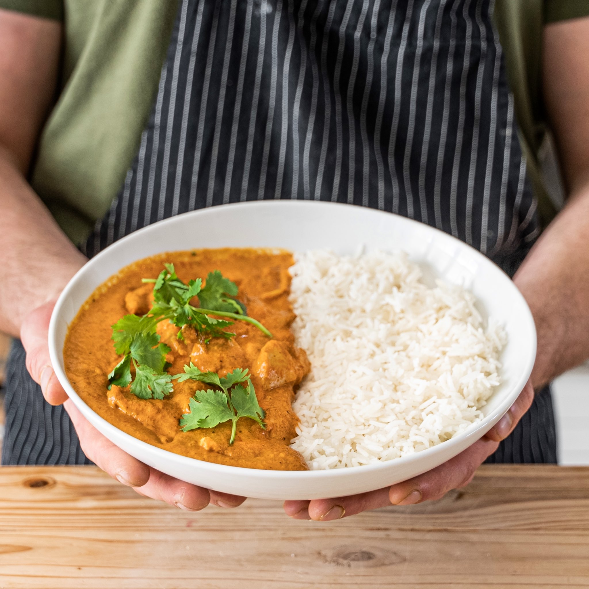

Butter Chicken
Description:
An affordable recipe for Butter Chicken curry from Joshua Weissman of Social Media fame.
Ingredients:
Chicken:
- cup (240) full-fat yogurt
- 1 Tbsp (15g) garam masala
- 1 Tbsp (15g) kosher salt
- 1 1/2 lbs (680g) boneless, skinless chicken thighs
Butter Chicken Curry:
- 2 Tbsp (30g) vegetable oil
- 1 yellow onion, diced
- 2-inch knob of ginger, finely diced
- 6 cloves of sliced garlic
- Salt and pepper to taste
- 2 tsp (8g) paprika
- 2 tsp (9g) ground cumin
- 1 Tbsp (14g) garam masala
- 1 1/2 tsp (6g) turmeric powder *optional
- 14 oz crushed tomatoes
- 2/3 cup (160ml) water
- 1 cup (240ml) heavy cream
- 2 Tbsp (28g) unsalted butter
- Steamed rice
- Fresh cilantro *optional
Steps:
- Marinate chicken thighs with yogurt, garam masala, and salt for 30 minutes or overnight
- Heat vegetable oil in large pan over medium-high heat until shimmering hot.
- Add chicken and sear each side 2-3 minutes
- Remove chicken from pan, lower to medium, add a bit more oil with diced onions, diced ginger, sliced garlic, and salt and pepper to taste. Mix and stir, sauteing for 2-3 minutes or till softened.
- Add spices and stil till toasted for 1-2 minutes
- Add crushed tomatoes and water, stir until incorporated over medium heat. Simmer 5-8 minutes until sauce is reduced.
- Add back chicken, mix and simmer for 3-5 minutes.
- Add heavy cream, mix and bring to light simmer before lowering heat to low, simmer for no longer than 3-4 minutes. Stir often.
- Turn off heat and stir unsalted butter in till melted, season to taste with salt.
- Plate with rice and top with cilantro.